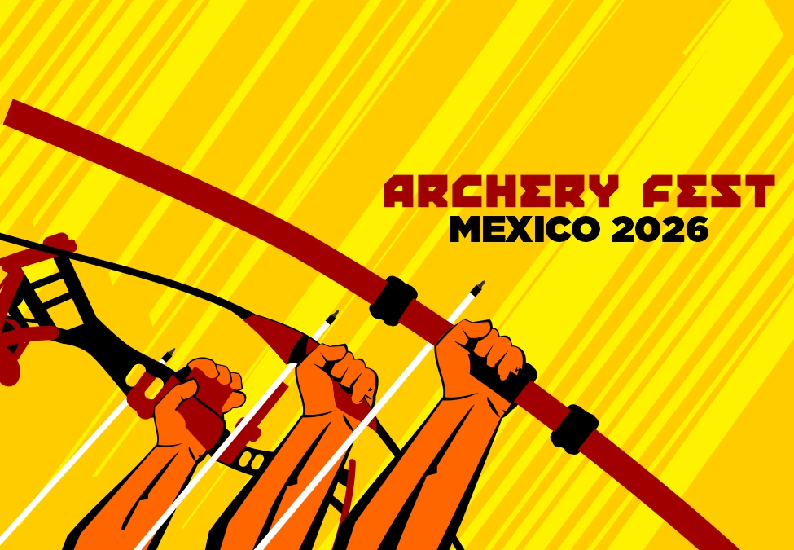
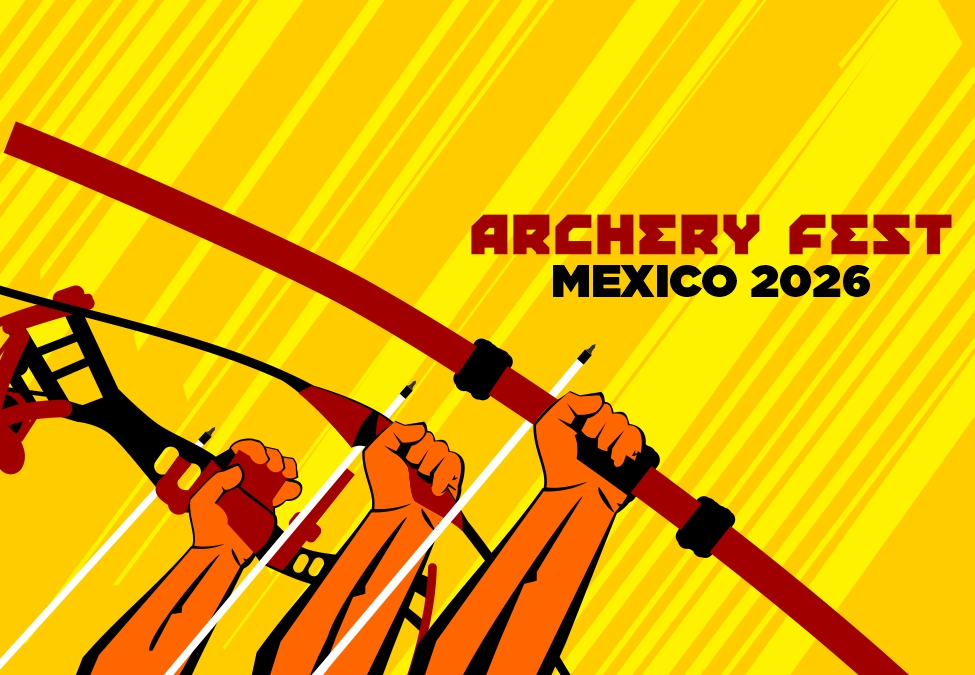

Archery Fest 2026 2026
📅 Fecha: Febrero 2026
📍 Lugar: Estadio 20 de Noviembre
Este es el nuevo uniforme que estaremos utilizando en el 2026
#JuaresEsElNumero1
⬅ Volver a noticias📅 Fecha: Febrero 2026
📍 Lugar: Estadio 20 de Noviembre
Este es el nuevo uniforme que estaremos utilizando en el 2026
#JuaresEsElNumero1
⬅ Volver a noticias